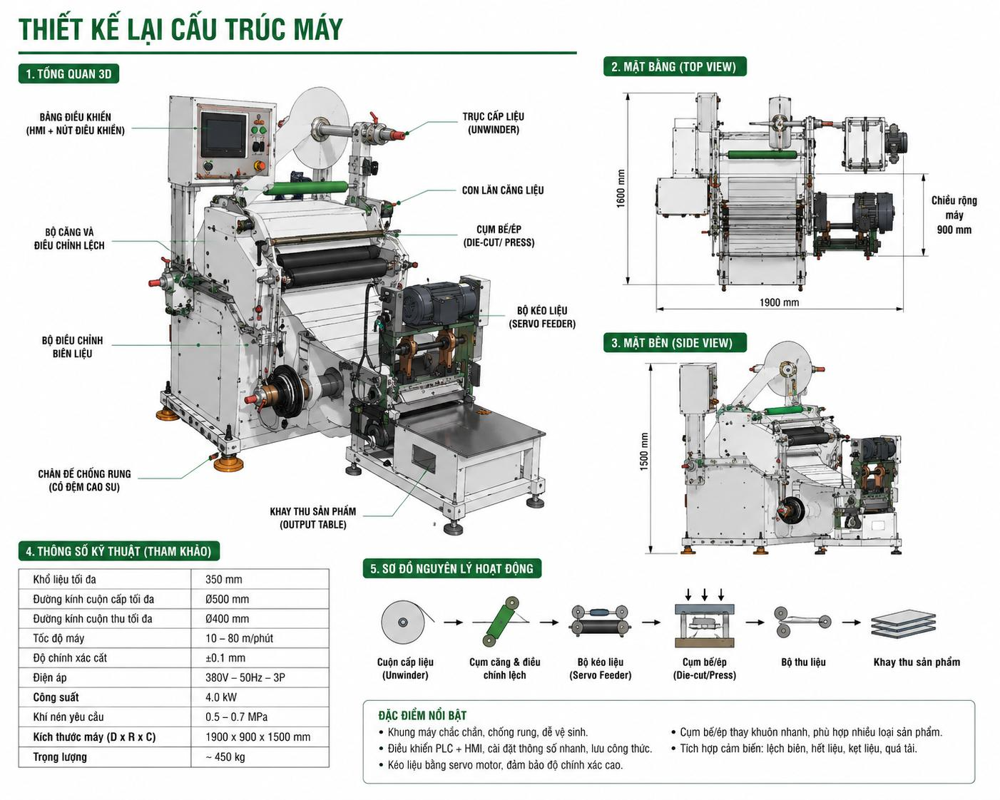

Máy cắt khuôn là thiết bị trung tâm trong công đoạn cắt bế chính xác, sử dụng khuôn dao được thiết kế theo biên dạng sản phẩm để cắt, ép và tạo hình vật liệu. Máy tích hợp điều khiển PLC + HMI cho phép cài đặt thông số nhanh và lưu công thức sản xuất, cùng hệ thống kéo liệu bằng servo motor đảm bảo độ chính xác cắt cao và cảm biến giám sát lệch biên, hết liệu, kẹt liệu, quá tải.
Người vận hành phải nhận biết đúng các cụm chính trước khi thao tác; không điều chỉnh hoặc tháo che chắn khi máy đang vận hành.